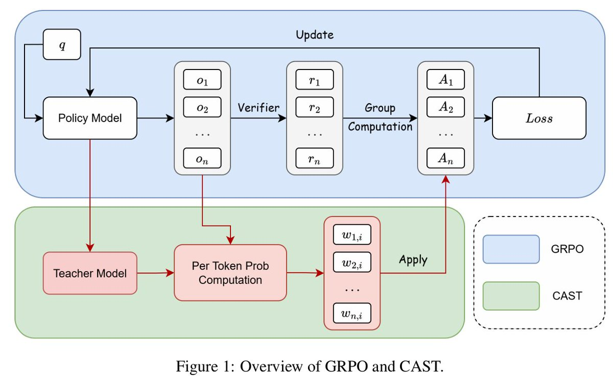

核心判断
@sheriyuo 的 X 帖抓住了 CAST 的主线：GRPO 在 all-correct / all-wrong 组上会进入零方差死区，OPSD 虽然给 dense token signal，却可能和最终答案正确性错位。CAST 的设计不是再加一个蒸馏 loss，而是把 verifier-grounded trajectory correctness 作为方向锚点，再用 answer-free self-teacher gap 做局部 token-level advantage shaping。
不是替代 GRPO
CAST 仍使用 GRPO / DAPO 式 clipped policy objective。它修改的是 advantage construction：从同一条 rollout 的单一序列级 advantage，变成带 token 局部校正的 detached advantage。
不是 privileged teacher
默认 CAST 的 teacher 不看 ground-truth answer 或 reference solution。答案只给 verifier 用来产生 binary correctness reward，teacher 只看题目和 generated prefix。
不是过程监督
CAST 的 dense signal 是 log-prob gap + verifier correctness 组合出来的 token advantage，不是 PRM，也不是语义级 step correctness label。

GRPO 的问题不是没有 reward，而是 reward 太稀疏
GRPO 的基本做法是：对同一个 prompt 采样 \(G\) 条 rollout，用 verifier 给每条答案二元 reward \(r_i\)，再在组内归一化得到 advantage：
这套机制在 mixed group 里很自然：同一道题有答对也有答错，正确 rollout 相对上升，错误 rollout 相对下降。但一旦同组全对或全错，\(\sigma_r\) 接近 0，组内相对差异消失。对训练系统来说，这两类样本很尴尬：全对组本该帮助模型巩固好模式，全错组本该帮助模型抑制坏模式，结果标准 GRPO 看不到可用的相对优势。
这组诊断很关键：zero-variance group 不是边角料，而是训练中超过一半 prompt group 的结构性现象。如果直接丢弃或静默处理，等于放弃大量 consolidation / failure signal。
OPSD 的问题是 token 偏好不等于轨迹正确
OPSD 试图给 token 级 dense guidance：用 stop-gradient teacher 与 student 对同一 sampled token 的 log-prob 差值判断 token 值不值得鼓励。这个思路在 RLVR 场景里会遇到一个根本问题：token preference 必须通过最终 verifier correctness 解释。
| 位置 | 直觉误读 | CAST 的读法 |
|---|---|---|
| 正确 trajectory 里的 teacher-positive token | 应该正向强化。 | 可以强化，但仍需裁剪；正确答案里也可能有冗余模板和偶然路径。 |
| 正确 trajectory 里的 teacher-negative token | 既然答案对，也应该整体奖励。 | 不一定。teacher-negative token 可以被局部翻成负 advantage，用来抑制不被 teacher 支持的局部模式。 |
| 错误 trajectory 里的 teacher-negative token | 继续负向惩罚。 | 通常是稳定 suppression signal，CAST 会让负向压力更强。 |
| 错误 trajectory 里的 teacher-positive token | teacher 喜欢，所以应该正向强化。 | 只能给 bounded local positive credit，因为整条答案错，teacher-positive signal 可能只是局部流畅或局部正确。 |
CAST 机制拆解
CAST 可以拆成四个动作：给 zero-variance group 一个 bounded base sign；用 answer-free teacher 计算 token gap；用 asymmetric clipping 区分放大和抑制；最后允许 token advantage 局部翻转。
1. 轨迹级 base advantage
mixed group 用标准 GRPO advantage。all-correct group 给 \(+b_{correct}\)，all-wrong group 给 \(-b_{wrong}\)，默认都是 1。
2. Answer-free self-teacher
计算 \(g_{i,t}=\log \pi_\phi(y_{i,t}|x,y_{i,<t})-\log \pi_{\theta old}(y_{i,t}|x,y_{i,<t})\)。teacher 不看参考答案。
3. 非对称裁剪
正 base 轨迹默认裁剪到 \([0.8, 1.05]\)，负 base 轨迹默认裁剪到 \([0.95, 1.2]\)，偏向更强的 teacher-negative suppression。
4. Advantage flipping
正确轨迹的 teacher-negative token 可变成负 advantage；错误轨迹的 teacher-positive token 可得到有界正 advantage。
形式上，CAST 先得到符号保持的 shaped advantage：
然后按 \(B_i\) 与 \(g_{i,t}\) 的符号进入局部 sign reversal。最终 token advantage 会被裁剪到稳定区间，例如默认 \([-1.2, 1.2]\)，并作为 detached coefficient 放进 DAPO / GRPO clipped objective。梯度通过 policy ratio 走，不通过 teacher gap 或裁剪操作反传。
实验证据：主表之外更该看 ablation
论文主实验在 DAPO-Math-17K 上训练 Qwen3-1.7B、Qwen3-4B、Qwen3-8B，300 optimizer steps，LoRA 更新，在 AIME24、AIME25、AIME26、MATH-500、HMMT25 上以 Avg@16 和 Pass@16 评估。主表里 CAST 在三个规模上整体强于 GRPO、OPSD、GRPO+OPSD、RLSD、RLRT。
| Qwen3-4B 方法 | AIME24 Avg / Pass | AIME26 Avg / Pass | MATH-500 Avg / Pass | HMMT25 Avg / Pass |
|---|---|---|---|---|
| Base | 20.83 / 46.7 | 17.71 / 50.0 | 83.91 / 96.0 | 10.21 / 23.3 |
| GRPO | 21.04 / 43.3 | 20.00 / 53.3 | 83.86 / 95.4 | 12.08 / 30.0 |
| RLRT | 21.67 / 53.3 | 20.00 / 63.3 | 84.35 / 95.6 | 12.92 / 26.7 |
| CAST | 41.25 / 76.7 | 36.25 / 70.0 | 89.38 / 98.0 | 21.67 / 50.0 |
更有解释力的是 component ablation。Mixed-only 低于完整 CAST，说明 zero-variance branch 不是装饰；With ground-truth answer 低于 answer-free CAST，说明 privileged answer context 不一定带来更好 token shaping；No sign reversal 掉得明显，说明收益不是普通 reweighting，而是局部正负翻转真的有作用。
工程启发：把 teacher 从裁判降级为局部 shaping 工具
真实训练系统里，CAST 最值得借鉴的是模块边界：verifier 负责 outcome，teacher 负责 local log-prob geometry。这个分工可以避免两个常见错误：一是把 binary reward 当作所有 token 的同号标签，二是把 teacher token preference 当作最终正确性的代理。
适合接入的位置
CAST 应该进入 RLVR trainer 的 advantage construction 层，而不是作为额外 SFT 数据清洗或推理时 rerank。已有 GRPO pipeline 需要能保存 old policy log-prob、teacher log-prob、verifier reward 和 group type。
上线前要看的指标
不要只看 Avg@16 / Pass@16。还要看 response length、token budget、zero-variance group 占比、sign-flipped token 比例、teacher refresh 成本、训练 wall-clock、OOM 和 verifier 稳定性。
为什么不是简单加 OPSD
GRPO+OPSD 的 auxiliary token loss 仍然可能 correctness-unaware。CAST 把 token gap 转成 advantage 前先过 verifier correctness，这一步才是关键。
为什么不是 PRM
CAST 不标注每一步推理是否对，也不训练过程奖励模型。它是概率空间里的局部信用重分配，解释性弱于 PRM，但工程门槛也更低。
边界与风险
CAST 是一个强工程假设，不是通用对齐答案。它成立的前提是 verifier 稳定、任务可判分、多采样组内有足够覆盖，并且 self-teacher gap 在当前模型族和训练阶段仍含有可用局部信号。
任务边界
证据主要来自数学 RLVR。开放式写作、长程 agent、工具调用和多模态任务如果没有可靠 verifier，不能直接照搬。
规模边界
论文覆盖 Qwen3-1.7B / 4B / 8B、LoRA、最多 600 steps。更大模型、full-parameter update 和更长训练仍未验证。
成本边界
论文报告 300-step CAST 约为 GRPO wall-clock 的 1.25 倍，并且 CAST 往往产生更长输出。收益需要和训练/推理成本一起评估。
关键术语对齐
RLVR
Reinforcement Learning with Verifiable Rewards。奖励来自可程序化或可验证的结果，例如数学最终答案是否匹配，而不是人类偏好模型。
Zero-variance group
同一 prompt 的多条 rollout 全对或全错，导致组内 reward 方差消失，标准 GRPO 的 group-relative advantage 失去区分度。
Teacher-positive / teacher-negative
self-teacher 对 sampled token 的 log-prob 高于 / 低于 old policy。它说明 teacher 相对更支持或更不支持这个 token，不直接说明 token 语义正确。
Advantage flipping
局部 token advantage 可以和整条 trajectory 的 base sign 相反：正确答案里的坏 token 被压，错误答案里的局部好 token 被小幅鼓励。
证据边界与资料索引
本文基于 @sheriyuo 的 X 原帖、配图和论文 CAST: Non-Privileged Clipped Asymmetric Self-Teaching with Advantage Flipping for GRPO。X 页面公开访问不稳定，线程正文以可访问的公开线程内容为准；论文事实以 arXiv 摘要页、PDF 正文和 PDF 元数据为准。与帖子中提到的 VeriGate 相关的上下文，本轮未检索到足够一手材料，因此没有纳入技术判断。
一手材料
X threadarXiv PDFtweet imageRLVR
核验边界
主帖短链解析到 arXiv `2606.00172`。论文 PDF 元数据标题、作者与 2026-05-29 arXiv v1 一致。本文没有复现实验，也没有运行 CAST 训练代码，因此实验数字按论文报告解读，结论限于材料阅读和机制分析。